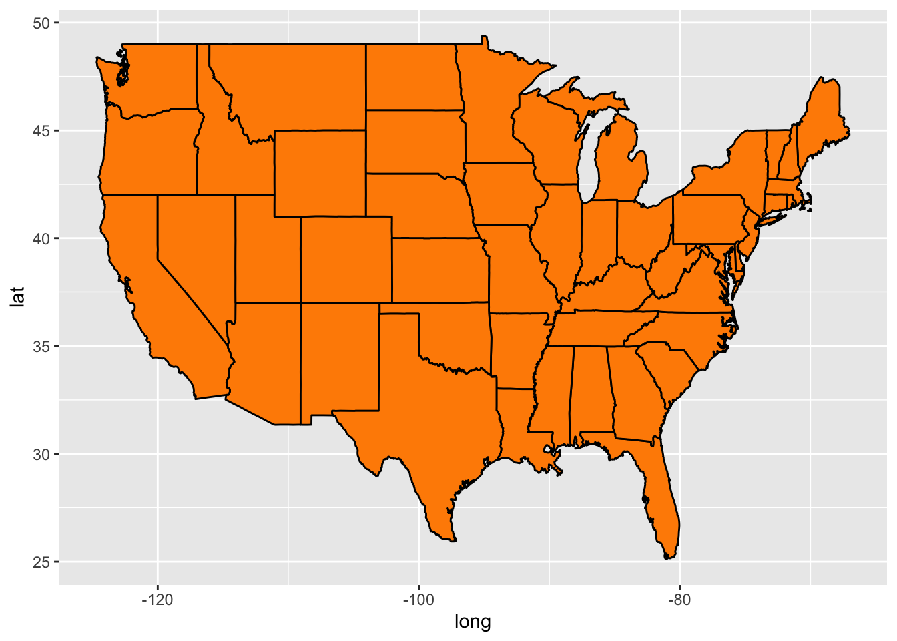
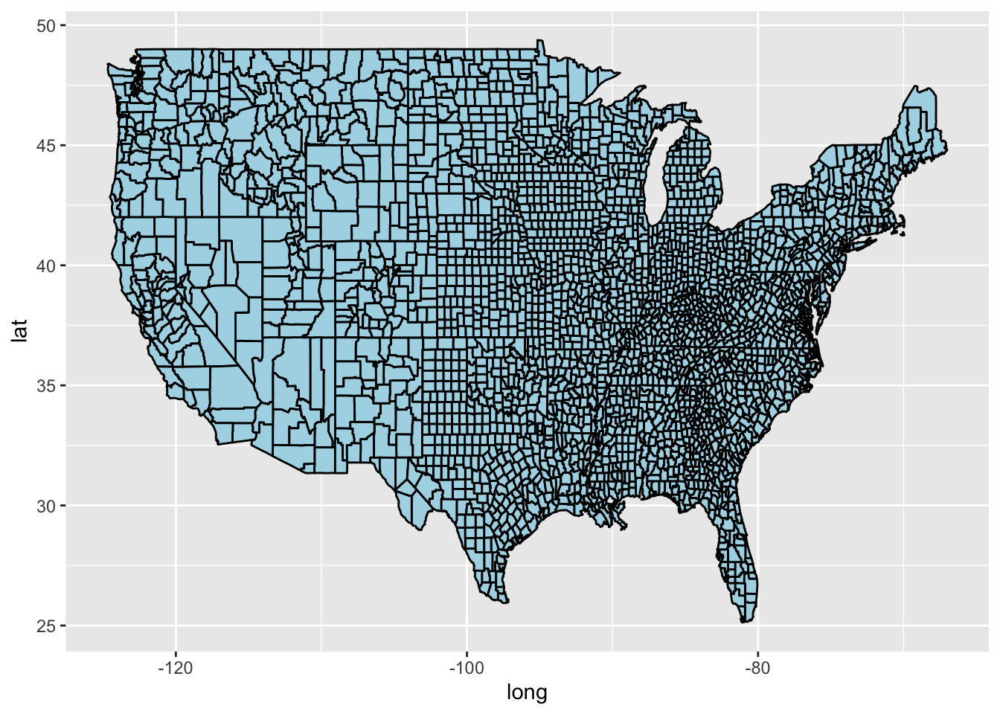
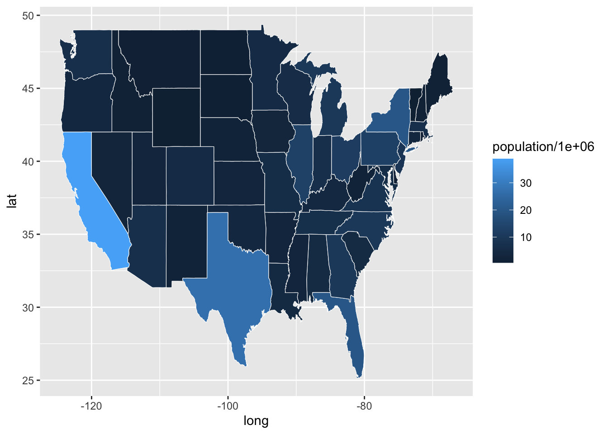
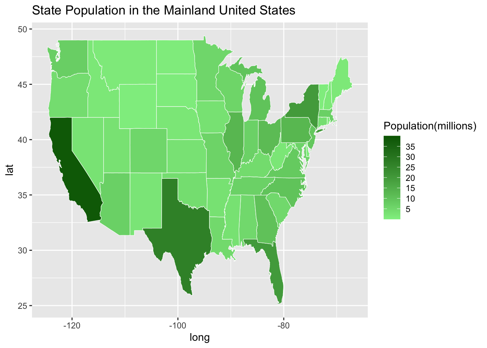
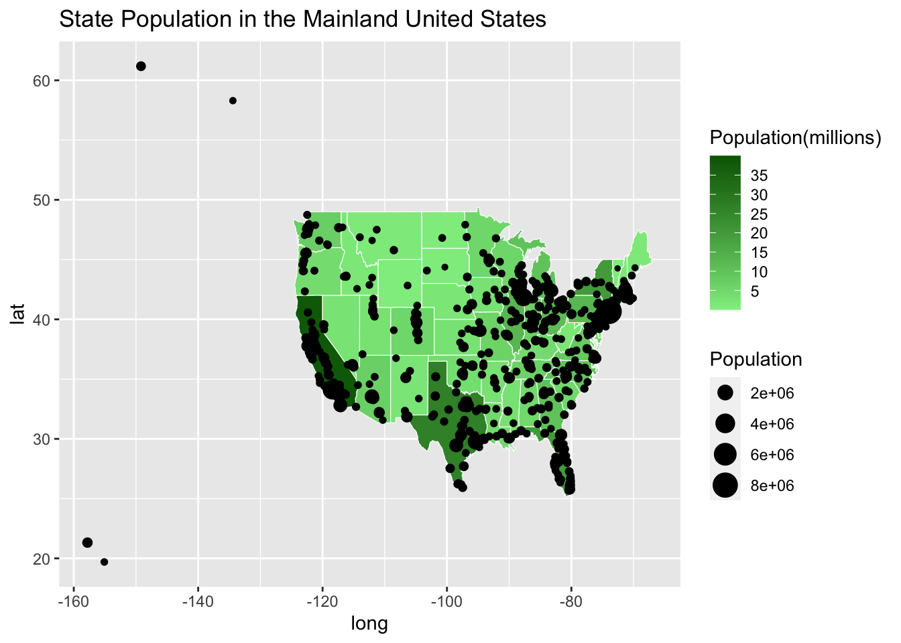
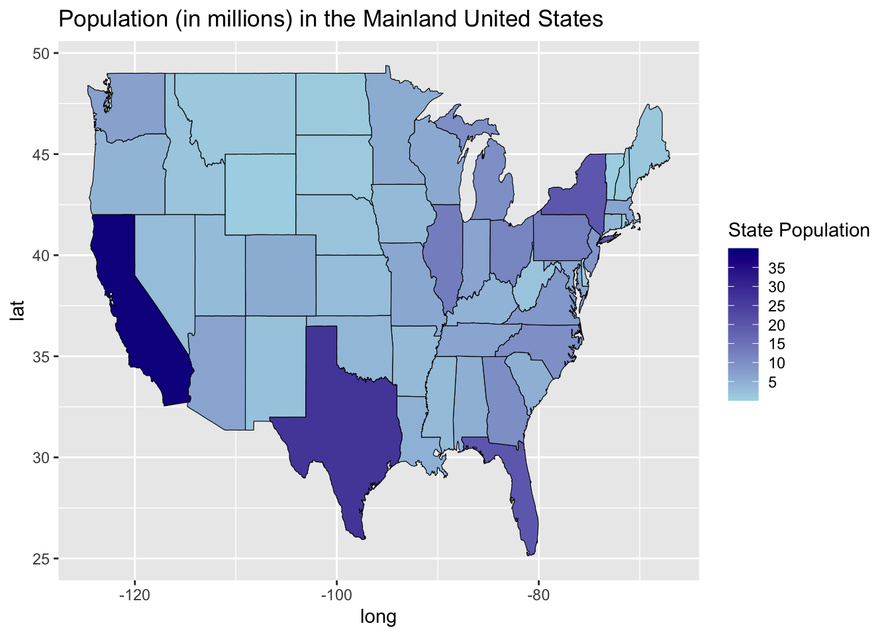
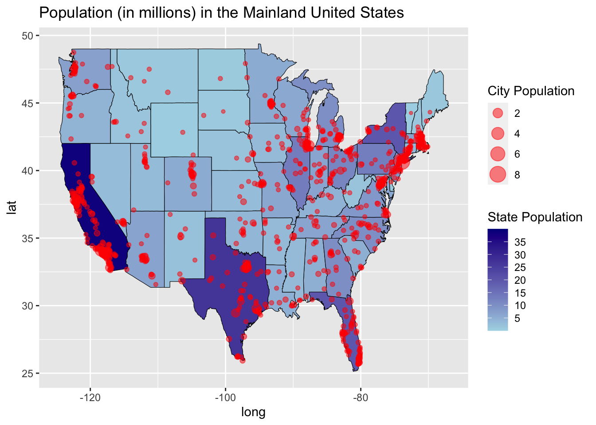
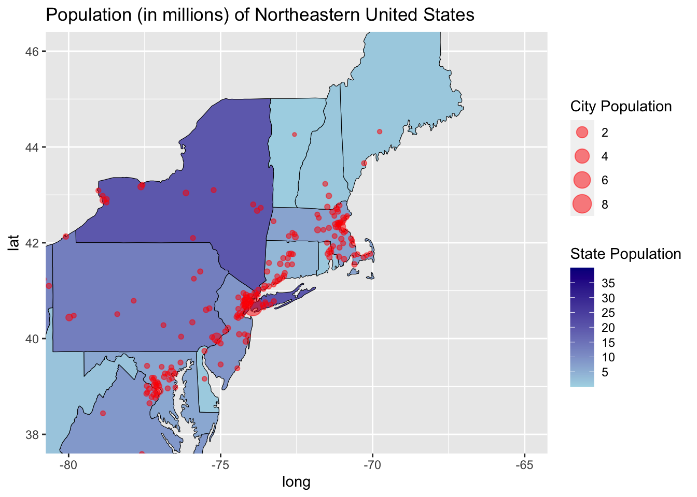

{kind=link}
library(tidyverse) # load all tidyverse packages
library(maps) # Provides latitude and longitude data for various mapsIntroduction to Creating Maps with ggplot2
1 Introduction
In this tutorial we will make choropleth maps, sometimes called heat maps, using the ggplot2 package. Here is a typical though very intriguing example from the Washington Post and here is a particularly beautiful example by Timo Grossenbacher. A choropleth map is a map that shows a geographic landscape with units such as countries, states, or watersheds where each unit is colored according to a variable of interest.
We start by loading the tidyverse and maps packages. The maps package simply contains several simple data files that allow us to create maps.
Data: In addition to data files from the maps package, we will use the StatePopulation data, which includes the state name, estimated population, and the number of electoral college votes each state is allocated.
# load United States state map data
main_states <- map_data("state")
# read the state population data
state_pop <- read_csv("data/StatePopulation.csv")
glimpse(main_states) # See what this looks likeRows: 15,537
Columns: 6
$ long <dbl> -87.46201, -87.48493, -87.52503, -87.53076, -87.57087, -87.5…
$ lat <dbl> 30.38968, 30.37249, 30.37249, 30.33239, 30.32665, 30.32665, …
$ group <dbl> 1, 1, 1, 1, 1, 1, 1, 1, 1, 1, 1, 1, 1, 1, 1, 1, 1, 1, 1, 1, …
$ order <int> 1, 2, 3, 4, 5, 6, 7, 8, 9, 10, 11, 12, 13, 14, 15, 16, 17, 1…
$ region <chr> "alabama", "alabama", "alabama", "alabama", "alabama", "alab…
$ subregion <chr> NA, NA, NA, NA, NA, NA, NA, NA, NA, NA, NA, NA, NA, NA, NA, …glimpse(state_pop)Rows: 50
Columns: 3
$ region <chr> "alabama", "alaska", "arizona", "arkansas", "california", …
$ population <dbl> 4849377, 737732, 6731484, 2994079, 38802500, 5355856, 3596…
$ elect_votes <dbl> 9, 3, 11, 6, 55, 9, 7, 3, 29, 16, 4, 4, 20, 11, 6, 6, 8, 8…2 Making a base map
Creating maps follows the same grammar of graphics structure as all other ggplots. Here we use the appropriate dataset (MainStates), geom(polygon), and aesthetics (latitude and longitude values) to create a base map.
# Plot all states with ggplot2, using black borders and darkorange fill
# Hmm, that color scheme looks familiar
ggplot(main_states) +
geom_polygon(aes(x = long, y = lat, group = group),
color = "black", fill = "darkorange" )
# Try using the hex color code #E25220 instead of "darkorange". Do you
# recognize the color scheme?Questions:
On the first couple pages of the maps package documentation, we see that in addition to state, the maps package includes county, france, italy, nz, usa, world and world2 files.
- Follow the example above to create a base map of United States counties. Make sure you use the
map_datafunction as well as theggplotfunction.
all_county <- map_data("county")
ggplot(all_county) +
geom_polygon(aes(x = long, y = lat, group = group),
color = "black", fill = "lightblue")
- Use the
worldfile to create a base map of the world with white borders and dark blue fill.
- Notice that the main_states file has a column titled “group”. What happens to your base map when group is ignored (i.e. run the code
ggplot(main_states) + geom_polygon(aes(x=long, y=lat)))?
3 Customizing your choropleth map
Now that we have created a base map of the mainland states, we will color each state according to its population. The first step is to use relational data commands to merge the main_states and state_pop files.
# This chunk previews one join operation we'll see next week
# Merge the main_states and state_pop files
# Use inner_join to link the population and electoral vote information
# to the state map coordinate data in main_states
merged_states <- inner_join(main_states, state_pop, by = "region")
glimpse(merged_states)Rows: 15,527
Columns: 8
$ long <dbl> -87.46201, -87.48493, -87.52503, -87.53076, -87.57087, -87…
$ lat <dbl> 30.38968, 30.37249, 30.37249, 30.33239, 30.32665, 30.32665…
$ group <dbl> 1, 1, 1, 1, 1, 1, 1, 1, 1, 1, 1, 1, 1, 1, 1, 1, 1, 1, 1, 1…
$ order <int> 1, 2, 3, 4, 5, 6, 7, 8, 9, 10, 11, 12, 13, 14, 15, 16, 17,…
$ region <chr> "alabama", "alabama", "alabama", "alabama", "alabama", "al…
$ subregion <chr> NA, NA, NA, NA, NA, NA, NA, NA, NA, NA, NA, NA, NA, NA, NA…
$ population <dbl> 4849377, 4849377, 4849377, 4849377, 4849377, 4849377, 4849…
$ elect_votes <dbl> 9, 9, 9, 9, 9, 9, 9, 9, 9, 9, 9, 9, 9, 9, 9, 9, 9, 9, 9, 9…Next we create a base map of the mainland United States, using state population as a fill variable.
# Create a Choropleth map of the United States
p <- ggplot(merged_states)
p <- p + geom_polygon(aes(x = long, y = lat, group = group,
fill = population/1000000), color = "white",
lwd = 0.2)
p # save to add/modify below
Remarks
Instead of using
population, we usepopulation/1000000. Each state is colored by population size (in millions) to make the legend easier to read.Border color (white) and line thickness (0.2) are specifically defined within the
geom_polygon().
Once a map is created, it is often helpful to modify color schemes, determine how to address missing values (na.value) and formalize labels. Notice that we assigned the graph a name, p. This is particularly useful as we add new components to the graph.
p <- p + scale_fill_continuous(name = "Population(millions)",
low = "lightgreen", high = "darkgreen",limits = c(0,40),
breaks = c(5, 10, 15, 20, 25, 30, 35), na.value = "grey50") +
labs(title = "State Population in the Mainland United States")
p
Questions:
What two columns were added to the main_states file when it was joined with the state_population file?
Create a choropleth map showing state populations. Make the state borders purple with
lwd = 1. Also change the color scale for state populations, with low populations colored white and states with high populations colored dark red.
- Modify the graph and legend in Question 5) to show the log of populations instead of the population in millions. In this map, explain why you will need to set new
limitsandbreaks. Hint: Create a map without setting specificlimitsandbreaksvalues. How does the graph change?
The following code provides just a few more examples of how each map can be customized. The ggplot2 website and the Data Visualization Cheat Sheet provide many additional detailed examples.
The following code modifies the previous graph by modifying the height and thickness of the legend and by adjusting the color, size and angle of the legend text.
p <- p + guides(fill = guide_colorbar(barwidth = 0.5, barheight = 10,
label.theme = element_text(color = "green", size = 10,
angle = 45)))
pIt is also possible to overlay two polygon maps. The code below creates county borders with a narrow line and then adds a thicker line to represent state borders. The alpha = .1 causes the fill in the state map to be transparent, allowing us to see the county map behind the state map.
## BE SURE to notice that two different data sets are being used in the two geom_polygon levels.
all_county <- map_data("county")
ggplot() +
geom_polygon(data = all_county, aes(x = long, y = lat, group = group),
color = "darkblue", fill = "lightblue", lwd = .1) +
geom_polygon(data = main_states, aes(x = long, y = lat, group = group),
color = "black", fill = "lightblue", lwd = .5, alpha = .1) 
4 Adding points to your choropleth map
The maps package also includes a us.cities file. The following code adds a point for each major city in the United States. Notice that the size of the point is determined by the population of that city.
#plot all states with ggplot
p <- p + geom_point(data = us.cities, aes(x = long, y = lat, size = pop)) +
scale_size(name = "Population")
p
us.cities2 = arrange(us.cities, long)
head(us.cities2) name country.etc pop lat long capital
1 Honolulu HI HI 386345 21.32 -157.80 2
2 Hilo HI HI 43466 19.70 -155.09 0
3 Anchorage AK AK 279428 61.18 -149.19 0
4 Juneau AK AK 31187 58.30 -134.42 2
5 Corvallis OR OR 50932 44.57 -123.28 0
6 Eugene OR OR 146483 44.05 -123.11 0It appears that the us.cities file includes cities in Hawaii and in Alaska. We will again use data transformation commands to eliminate these four cities and make a final map of just the mainland.
#plot all states with ggplot
main_cities <- filter(us.cities, long >= -130)
glimpse(us.cities)Rows: 1,005
Columns: 6
$ name <chr> "Abilene TX", "Akron OH", "Alameda CA", "Albany GA", "Alba…
$ country.etc <chr> "TX", "OH", "CA", "GA", "NY", "OR", "NM", "LA", "VA", "CA"…
$ pop <int> 113888, 206634, 70069, 75510, 93576, 45535, 494962, 44933,…
$ lat <dbl> 32.45, 41.08, 37.77, 31.58, 42.67, 44.62, 35.12, 31.29, 38…
$ long <dbl> -99.74, -81.52, -122.26, -84.18, -73.80, -123.09, -106.62,…
$ capital <int> 0, 0, 0, 0, 2, 0, 0, 0, 0, 0, 0, 0, 0, 0, 0, 0, 0, 0, 0, 0…glimpse(main_cities)Rows: 1,001
Columns: 6
$ name <chr> "Abilene TX", "Akron OH", "Alameda CA", "Albany GA", "Alba…
$ country.etc <chr> "TX", "OH", "CA", "GA", "NY", "OR", "NM", "LA", "VA", "CA"…
$ pop <int> 113888, 206634, 70069, 75510, 93576, 45535, 494962, 44933,…
$ lat <dbl> 32.45, 41.08, 37.77, 31.58, 42.67, 44.62, 35.12, 31.29, 38…
$ long <dbl> -99.74, -81.52, -122.26, -84.18, -73.80, -123.09, -106.62,…
$ capital <int> 0, 0, 0, 0, 2, 0, 0, 0, 0, 0, 0, 0, 0, 0, 0, 0, 0, 0, 0, 0…g <- ggplot()
g <- g + geom_polygon(data = merged_states,
aes(x = long, y = lat, group = group, fill = population/1000000),
color = "black", lwd = 0.2) +
scale_fill_continuous(name = "State Population", low = "lightblue",
high = "darkblue", limits = c(0,40), breaks=c(5, 10, 15, 20, 25, 30, 35),
na.value = "grey50") +
labs(title = "Population (in millions) in the Mainland United States")
g
g <- g + geom_point(data = main_cities, aes(x = long, y = lat, size = pop/1000000),
color = "red", alpha = .5) +
scale_size(name = "City Population")
g
# Zoom into a particular region of the plot
g <- g + coord_cartesian(xlim=c(-80, -65), ylim = c(38, 46)) +
labs(title = "Population (in millions) of Northeastern United States")
g
5 On your own
- Restrict the
statesandall.citiesfiles to only a few contiguous states, such as the New England states: New York, Vermont, New Hampshire, Massachusetts, Rhode Island, and Connecticut. You could use the following code:
ne_list <- c("new york", "vermont", "new hampshire", "massachusetts", "rhode island",
"connecticut")
ne_states <- filter(merged_states, region %in% ne_list)Create a map of these states and color each state by the number of electoral votes in that state.
Add a point to represent each city in these states.
Color the cities so that state capitals are clearly differentiated from other cities. In the
geom_pointyou may want to use something like the following code:
g <- g + geom_point(data= main_cities, aes(x = long, y = lat,
size = pop/1000000, color = factor(capital), shape = factor(capital)),
alpha = .5) +
scale_size(name = "City Population")6 Additional Resources
https://ggplot2.tidyverse.org/reference/: A well-documented list of ggplot2 components with descriptions
http://www.statmethods.net/advgraphs/ggplot2.html: Quick-R introduction to graphics
http://stackoverflow.com/tags/ggplot2: Stackoverflow, an online community to share information.
http://www.cookbook-r.com/Graphs/: R Graphics Cookbook, a text by Winston Chang
7 Acknowledgements
This tutorial adapts the Introduction to Creating Maps with ggplot2 tutorial developed in collaborative work across Grinnell College (Shonda Kuiper), Lawrence University (Adam Loy) and Carleton College (Laura Chihara) funded by grants from the ACM and the Teagle Foundation. Their work is licensed under a Creative Commons Attribution-NonCommercial-ShareAlike 4.0 International License.